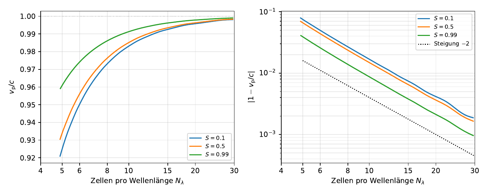
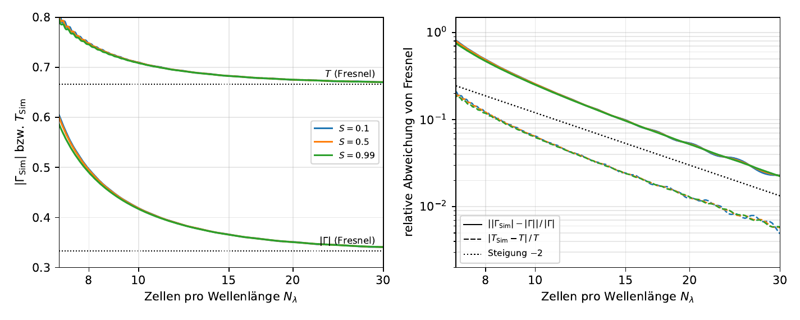
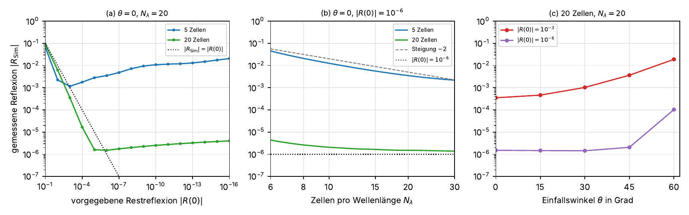

Raum zerlegen
Der Raum wird in Zellen der Kantenlänge Δ zerlegt. Elektrisches und magnetisches Feld sitzen dabei um eine halbe Zelle versetzt: das Yee-Gitter.
Die Finite-Difference Time-Domain-Methode (FDTD) berechnet elektromagnetische Felder direkt im Zeitbereich, indem sie Raum und Zeit auf einem Gitter diskretisiert. Diese Seite fasst Verfahren und Ergebnisse der Seminararbeit zusammen. Im FDTD Studio lassen sich eigene Anordnungen mit dem Python-Kern der Arbeit simulieren.
Die Maxwell-Gleichungen beschreiben alle klassischen elektromagnetischen Erscheinungen. Die beiden Rotationsgleichungen koppeln die zeitliche Änderung des einen Feldes an die räumliche Änderung des anderen. Aus dieser Kopplung folgt die Existenz elektromagnetischer Wellen.
Kombiniert man die beiden Rotationsgleichungen, erhält man im quellfreien, verlustlosen Raum die Wellengleichung. Eine ihrer Lösungen ist die ebene Welle, deren E- und H-Feld senkrecht zueinander und zur Ausbreitungsrichtung stehen:
Trifft die Welle senkrecht auf eine Grenzfläche, müssen die Tangentialkomponenten von E und H dort stetig sein. Daraus folgen Reflexions- und Transmissionsfaktor (Fresnel):
Ist die Anordnung in z-Richtung unveränderlich (∂/∂z = 0), zerfallen die Gleichungen in zwei unabhängige Fälle. Im TMz-Fall bleiben nur noch Ez, Hx und Hy übrig. Mit diesen drei Feldern rechnet der Kern. Der zweite Fall (TEz) ist dazu dual und wird in der Arbeit nicht betrachtet.
Analytisch lösbar sind die Maxwell-Gleichungen nur für wenige, stark idealisierte Anordnungen wie die ebene Welle oben. FDTD ersetzt deshalb jede Ableitung durch eine Differenz benachbarter Gitterwerte. Aus den Differentialgleichungen werden so explizite Rechenvorschriften, die für jede Zelle und jeden Zeitschritt ausgewertet werden.
Der Raum wird in Zellen der Kantenlänge Δ zerlegt. Elektrisches und magnetisches Feld sitzen dabei um eine halbe Zelle versetzt: das Yee-Gitter.
Auch zeitlich sind E und H versetzt: E zu den Zeiten n·Δt, H genau dazwischen. Die beiden Felder berechnen sich abwechselnd gegenseitig („Leapfrog“).
Für den neuen Wert einer Zelle braucht man nur ihre direkten Nachbarn. Das Verfahren ist also explizit, ein Gleichungssystem muss nie gelöst werden.
Yee (1966) ordnet die Feldkomponenten um eine halbe Zelle versetzt an. Jede Komponente liegt so genau dort, wo die zentralen Differenzen der anderen ausgewertet werden. Beim Überfahren eines Gitterpunkts werden die Nachbarn hervorgehoben, die in seine Aktualisierung eingehen.
E ist zu ganzzahligen Zeitpunkten n·Δt definiert, H zu den Zwischenzeitpunkten (n+½)·Δt. Beide Felder werden abwechselnd aus dem jeweils anderen berechnet. Dadurch ist auch die Zeitableitung eine zentrale Differenz zweiter Ordnung.
def step(self): t_halb = self.t + 0.5 * self.dt t_neu = self.t + self.dt self._update_H() # H: n-½ → n+½ self._inject_current_sources(t_halb) self._update_E() # E: n → n+1 self._inject_soft_sources(t_neu) self.time_step += 1 def _update_E(self): dHy = self.Hy[1:, 1:-1] - self.Hy[:-1, 1:-1] dHx = self.Hx[1:-1, 1:] - self.Hx[1:-1, :-1] # … PML-Hilfsfelder psi_ez_x, psi_ez_y … self.Ez[1:-1, 1:-1] = (self.Ca[1:-1, 1:-1] * self.Ez[1:-1, 1:-1] + self.Cb[1:-1, 1:-1] * (dHy - dHx + d * (self.psi_ez_x - self.psi_ez_y) - self.Jz[1:-1, 1:-1] * d))
Ein Zeitschritt für das gesamte Gitter besteht aus wenigen vektorisierten NumPy-Operationen, ohne explizite Schleife über die Zellen.
Das explizite Verfahren ist nur stabil, wenn der Zeitschritt klein genug gegenüber der Zellweite ist. Die Courant-Friedrichs-Lewy-Bedingung lautet für das zweidimensionale Gitter:
Die Demo zeigt einen verlustfreien, von PEC-Wänden umschlossenen Hohlraum. Für S ≤ 1 bleibt die Feldenergie nach dem Abklingen der Quelle konstant. Für S > 1 wächst die Mode höchster Ortsfrequenz aus dem Rundungsrauschen exponentiell an.
Die Phasengeschwindigkeit auf dem Gitter ist kleiner als c. Die Abweichung hängt von der Auflösung Nλ (Zellen je Wellenlänge) und von der Ausbreitungsrichtung ab. Längs der Gitterachsen ist sie am größten, diagonal am kleinsten.
Der Fehler fällt mit Nλ−2. Weil die Abweichung vom Kreis sehr klein ist, ist sie in der Darstellung überhöht.
Das Rechengebiet ist endlich. Ein ideal leitender Rand (PEC) reflektiert einfallende Wellen vollständig. Eine Perfectly Matched Layer ist eine künstliche, verlustbehaftete Randschicht, die auslaufende Wellen nahezu reflexionsfrei dämpft. Damit lässt sich ein unbegrenzter Raum nachbilden.
Die Leitfrage der Arbeit ist die Genauigkeit des Verfahrens. Dazu werden Simulationsergebnisse mit analytischen Lösungen verglichen. Die Abbildungen stammen aus der Seminararbeit (Anklicken vergrößert).

Im Gitter läuft die Welle stets etwas langsamer als c. Der relative Fehler fällt mit Nλ−2, bei doppelter Auflösung also auf ein Viertel. Längs der Gitterachsen ist er am größten, diagonal am kleinsten.

An einer Grenzfläche mit εr = 4 liegen Reflexions- und Transmissionsfaktor über den Fresnel-Werten, weil das Gitter die Felder eine halbe Zelle neben der Grenzfläche verknüpft. Die Abweichung fällt ebenfalls mit Nλ−2.

Jede Schichtdicke hat eine optimale Vorgabe R(0): Strengere Vorgaben vergrößern die Leitfähigkeitssprünge zwischen den Zellen und damit die Reflexion. Dünne Schichten reflektieren deutlich stärker; mit wachsendem Nλ sinkt dieser Anteil.
Das FDTD Studio führt den Python-Kern fdtd_core.py aus der Arbeit unverändert im Browser aus. Dafür wird Pyodide verwendet, das Python und NumPy als WebAssembly lokal ausführt. Eine Installation ist nicht nötig.
lauf.sim.Ez)Auf GitHub liegen die Seminararbeit „Die FDTD-Methode zur numerischen Lösung der Maxwell-Gleichungen“, der komplette Python-Kern, das Studio und die Skripte zu allen Testfällen.
fdtd_core.py, Randschicht, ZeitschrittDesktop-Studio mit Python starten:
$ git clone https://github.com/philipberenz-source/wseminar $ cd "wseminar/code snippets" $ pip install numpy matplotlib $ python fdtd_studio.py
Diese Website samt Web-Studio lokal:
$ cd wseminar/website $ python -m http.server 8000 # → http://localhost:8000